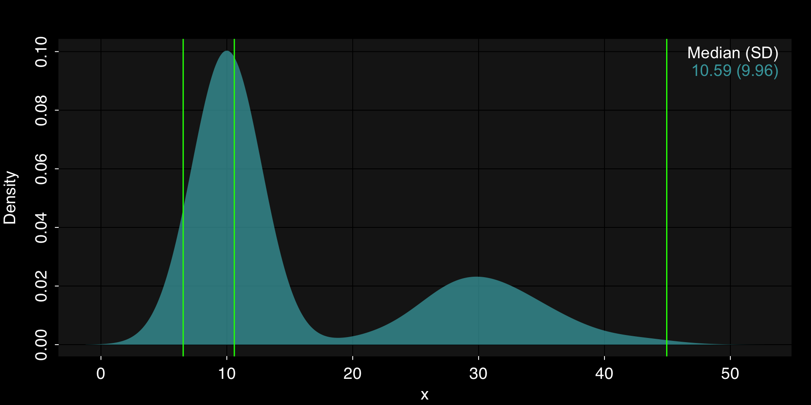

Chapter 15 Data Transformations
library(rtemis) .:rtemis 0.8.0: Welcome, egenn
[x86_64-apple-darwin17.0 (64-bit): Defaulting to 4/4 available cores]
Documentation & vignettes: https://rtemis.lambdamd.org15.1 Continuous variables
15.1.1 Standardization / Scaling & Centering with scale()
Depending on your modeling needs / algorithms you plan to use, it is often important to scale and/or center your data. Note that many functions, but not all, will automatically scale and center data internally if it is required by the algorithm. Check the function documentation.
If you manually scale and/or center your data, you must:
- Perform scaling and centering on your training data
- Save the centering and scaling parameters for each feature
- Apply the training set-dervied centering and scaling parameters to the test set prior to prediction/inference
A common mistake is to either scale training and testing data together in the beginning, or scale them separately.
Standardizing, i.e. converting to Z-scores, involving subtracting the mean and dividing by the standard deviation.
Scaling and centering in R is performed with the scale function. By default, both arguments scale and center are TRUE:
iris.scaled <- scale(iris[, -5])First, let’s check that it did what we were hoping:
colMeans(iris.scaled) Sepal.Length Sepal.Width Petal.Length Petal.Width
-4.480675e-16 2.035409e-16 -2.844947e-17 -3.714621e-17 apply(iris.scaled, 2, sd)Sepal.Length Sepal.Width Petal.Length Petal.Width
1 1 1 1 Good - We got mean of 0 (effectively) and standard deviation of 1 for each column.
Now, let’s get the scale and center attributes:
attributes(iris.scaled)$dim
[1] 150 4
$dimnames
$dimnames[[1]]
NULL
$dimnames[[2]]
[1] "Sepal.Length" "Sepal.Width" "Petal.Length" "Petal.Width"
$`scaled:center`
Sepal.Length Sepal.Width Petal.Length Petal.Width
5.843333 3.057333 3.758000 1.199333
$`scaled:scale`
Sepal.Length Sepal.Width Petal.Length Petal.Width
0.8280661 0.4358663 1.7652982 0.7622377 Let’s save the scale and center attributes and then check some values so that we are clear what is happening:
(.center <- attr(iris.scaled, "scaled:center"))Sepal.Length Sepal.Width Petal.Length Petal.Width
5.843333 3.057333 3.758000 1.199333 (.scale <- attr(iris.scaled, "scaled:scale"))Sepal.Length Sepal.Width Petal.Length Petal.Width
0.8280661 0.4358663 1.7652982 0.7622377 Sepal.Length_scaled <- (iris$Sepal.Length - .center[1]) / .scale[1]
all(Sepal.Length_scaled == iris.scaled[, "Sepal.Length"])[1] TRUENote: Due to limitation in numerical precision, checking sets of floats for equality after multiple operations is not recommended. Always a good idea to plot:
mplot3.fit(Sepal.Length_scaled, iris.scaled[, "Sepal.Length"])
15.1.2 Log-transform with log()
For the following example, x is an unknown feature in a new dataset we were just given.
We start by plotting its distribution:
mplot3.x(x)
We can see it is highly skewed. A log transform may help here.
Let’s check:
mplot3.x(log(x))
Looks like a good deal.
15.1.3 Data binning with cut()
Another approach for the above variable might be to bin it.
Let’s look at a few different ways to bin continuous data.
15.1.3.1 Equal-interval cuts
By passing an integer to cut()’s breaks argument, we get that many equally-spaced intervals:
x_cut4 <- cut(x, breaks = 4)
table(x_cut4)x_cut4
(0.248,189] (189,377] (377,565] (565,754]
981 17 1 1 Because the data is so skewed, equal intervals are not helpful in this case. The majority of the data gets grouped into a single bin.
Let’s visualize the cuts.
(xcuts5 <- seq(min(x), max(x), length.out = 5))[1] 1.0000 189.0175 377.0350 565.0525 753.0700mplot3.x(x, par.reset = FALSE)
abline(v = xcuts5, col = "red", lwd = 1.5)
Note: We used par.reset = FALSE to stop mplot3.x from resetting its custom par() settings so that we can continue adding elements to the same plot, in this case with the abline command.
15.1.3.2 Quantile cuts
Instead, we can get quantiles. We ask for 5 quantiles which corresponds to 4 intervals:
(xquants5 <- quantile(x, seq(0, 1, length.out = 5))) 0% 25% 50% 75% 100%
1.00000 10.65099 20.04102 39.21473 753.06995 mplot3.x(x, par.reset = F)
abline(v = xquants5, col = "green", lwd = 1.5)
We can use the quantiles as breaks in cut():
x_cutq4 <- cut(x, breaks = xquants5)
table(x_cutq4)x_cutq4
(1,10.7] (10.7,20] (20,39.2] (39.2,753]
249 250 250 250 With quantile cuts, each bin contains the same number of observations (+/- 1).
We just got a new mystery x! Let’s plot it:
mplot3.x(x)
It may be worth binning into 2. Let’s look at equal-interval and quantile cuts:
(xcuts3 <- seq(min(x), max(x), length.out = 3))[1] 6.53193 25.73907 44.94622(xquants3 <- quantile(x, seq(0, 1, length.out = 3))) 0% 50% 100%
6.53193 10.59441 44.94622 mplot3.x(x, par.reset = F)
abline(v = xcuts3, col = "red", lwd = 1.5)
mplot3.x(x, par.reset = F)
abline(v = xquants3, col = "green", lwd = 1.5)
dplot3.x(x)xcutm <- cut(x, breaks = c(min(x), 19, max(x)))mplot3.x(x, par.reset = F)
abline(v = c(min(x), 19, max(x)), col = "yellow", lwd = 1.5)
15.2 Categorical variables
Many algorithms, or their implementations, do not support categorical variables directly and to use them, you must convert all categorical variables to some type of numeric encoding.
15.2.1 Integer encoding
If the categorical data is ordinal, you simply convert them to integers.
For example, the following ordered factor:
(brightness <- factor(c("bright", "brightest", "darkest",
"bright", "dark", "dim", "dark"),
levels = c("darkest", "dark", "dim", "bright", "brightest"),
ordered = TRUE))[1] bright brightest darkest bright dark dim dark
Levels: darkest < dark < dim < bright < brightest…can be directly coerced to integer:
as.integer(brightness)[1] 4 5 1 4 2 3 215.2.2 One-hot encoding
When categorical features are not ordinal, and your algorithm cannot handle them directly, you can one-hot encode them. (This is similar to creating dummy variables in statistics). In one-hot encoding, each categorical feature is converted to k binary features, where k = number of unique values in the input, such that only one feature is 1 per case.
admission_reasons <- c("plannedSurgery", "emergencySurgery", "medical")
(admission <- sample(admission_reasons, 10, T)) [1] "plannedSurgery" "medical" "plannedSurgery" "medical"
[5] "medical" "emergencySurgery" "emergencySurgery" "emergencySurgery"
[9] "emergencySurgery" "emergencySurgery"We can use the rtemis oneHot() function:
(admission_oneHot <- oneHot(admission)) admission.emergencySurgery admission.medical admission.plannedSurgery
[1,] 0 0 1
[2,] 0 1 0
[3,] 0 0 1
[4,] 0 1 0
[5,] 0 1 0
[6,] 1 0 0
[7,] 1 0 0
[8,] 1 0 0
[9,] 1 0 0
[10,] 1 0 0